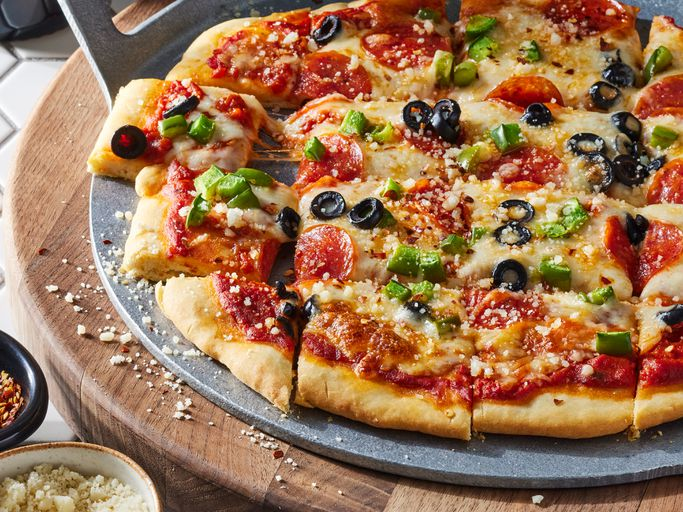

Pizza Mozarella Recipe

No-Yeast Pizza Crust Mozarella Pizza
This no-yeast pizza dough is quick to make and bakes up into a tender and
tasty crust for your favorite pizza toppings.
Ingredients:
- 1 ⅓ cups all-purpose flour
- 1 teaspoon baking powder
- ½ teaspoon salt
- ½ cup fat-free milk
- 2 tablespoons olive oil
Steps of preparation:
- Gather all ingredients.
-
Mix flour, baking powder, and salt together in a bowl; stir in milk and
olive oil until a soft dough forms.
-
Turn dough onto a lightly floured surface and knead 10 times. Shape
dough into a ball; cover with an inverted bowl and let sit for 10
minutes.
- Roll dough into a 12-inch circle on a baking sheet.
- Add your favorite toppings and bake. Enjoy!